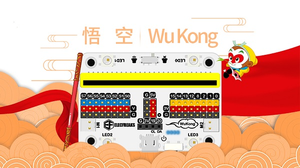

<h1>Wukong Breakout Board</h1>
The wukong breakout board provides power and allows the micro-bit controller to control the motors<br>
<br>
It is discussed here: <a href="http://www.elecfreaks.com/learn-cn/microbitExtensionModule/wukong.html">wiki</a><br>

<hr>
